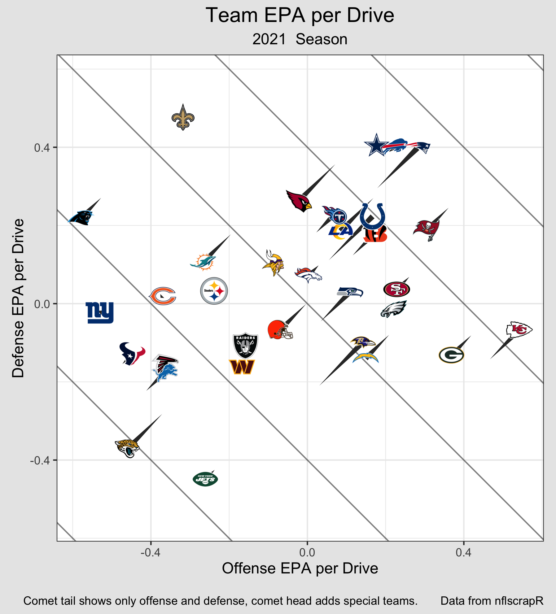

Expected Points Added per Drive
Explanation:
Let's start with an incredibly useful NFL metric called 'point differential'.
It is great at showing how good each team has been, and is even better for building
models to predict future outcomes. For anyone that does not know
what point differential is, it is the total number of points that a team has scored minus the total
number of points scored against that team. It is common to look at point differential
on a game level, a season level, or for a portion of a season. It is considered to be a solid baseline for
predicting future outcomes because, even though it is so simple, it is quite good at
predicting wins. So, when building a model, point differential is a good starting point.
However, point differential is not only useful for modeling because it is helpful in
predicting wins. It also is useful in being predicted. That is, a model built to
predict point differential on a game level can actually be better at predicting
wins than a model built to predict wins. Counterintuitive indeed! There are a few other
metrics that are also useful in being a target variable, but point
differential has the additional benefit that it perfectly correlates with wins:
if a team's point differential for a game is positive, then that team won. Therefore,
if you can predict point differential, you can directly predict game outcomes.
It is an incredibly useful metric.
So, what are the downsides of using point differential as a target variable?
One is that when the teams get an abnormal amount of scoring opportunities (because
of a shootout, overtime, or some other reason), the point differential can be
artificially inflated or deflated. Another downside is
that there are 8 units contributing to the overall point differential, and it would be
helpful to separate the point differential into the contributions from each of these
units. But wait, aren't there only 3 units? Offense, Defense, and Special Teams?
Well this might be overkill, but I also want to separate special teams into the
Kickoff Kicking unit, the Kickoff Receiving unit, the Punt Kicking unit, the Punt
Receiving unit, the Field Goal/Extra Point Kicking unit, and the Field Goal/Extra Point
Defensing unit. There might be some correlations in talent/outcomes between these units,
but I don't think that we should make that assumption before checking
through modeling. Okay, let's say there are 8 units. Why is it helpful to
separate the point differential between them? Each unit has a separate ability and
that ability might be easier to predict or have less variance than than the other units.
Imagine that an Offense gets down to the 10 yardline but then the Field Goal/Extra Point
Kicking unit (FG/XP Kicking unit) misses the field goal. That missed field goal
definitely doesn't tell us anything about the Offense. It also only tells us a little bit
about the FG/XP Kicking unit and it should probably be assumed that
another miss in this situation is still unlikely. Therefore, properly apportioning the point
differential between these two units would show that the Offense did better than might be
assumed based on the overall point differential, and the FG/XP Kicking unit did worse.
So, let's start modifying point differential to find an even better metric to
use as our target variable. We could try to address the difference in the amount of
scoring attempts by dividing the point differential by the number of plays.
This is a step in the right direction, but we still can't distribute the contributions
among the units. One big way to help with this distribution is to use
'Expected Points Added' from nflfastR.
This gives each game state an expected value (called 'Expected Points'). Then, for each
play, they take the difference between the Expected Points of the game states before
and after that play in order to calculate the amount of Expected Points added
on that play. This allows us to ascribe the Expected Points added, or 'EPA', of each play
to whichever units were on the field for that play.
Thus we can apportion the overall point differential to each unit on a per play basis!
This also allows us to normalize the point differential by the number of plays so that
longer or shorter games are normalized. This normalization makes sense, but it still
has an issue that we need to address.
The issue is that some teams have more consistent, low-value plays
while other teams have fewer explosive, high-value plays. Using EPA per play
penalizes the more consistent teams to the point that the winning team can end up
with a lower EPA per play! Even if EPA per play is more predictive
than other metrics, if we are trying to use it as a target variable to predict who won,
it needs to accurately reflect who won.
So, we can designate the points added to different units using EPA, but we need to
normalize it by a value that is the same for both teams in a given game. Instead of normalizing
it by the amount of plays, we could normalize each unit by the total number of drives
in a game. This metric, EPA per Drive
or EPApD, is able to adjust for games that have a different number of scoring
opportunities without penalizing different styles of gameplay. It also has the
property that the sum of the EPApD of Team A's units will be greater than the
sum of Team B's units if and only if Team A won. This meets all of the
criteria that we were looking for!
So we have found the type of metric that we want to use, but how exactly
do we calculate it. For each game, we can attribute the EPA of each play to the appropriate
unit and have running totals for each unit. We can then check that the sum of all
the units is equal to the point differential. Then, for each half, we can count
the number of drives, adding 0.5 if one team got an extra drive. Then, to get the
final metric, we take the total EPA in a game for each unit and divide them by the
total number of drives in that game.
Now, the way that we're treating drives might feel a little weird. If one team gets an
extra drive, why does it make sense to divide the EPA totals by the same number?
Other than being necessary to make sure that EPApD is perfectly correlated with who
won, it takes into account that the number of drives each team has, and whether or
not one team gets an extra drive, is based on how the teams played. It is something
that they can control and should be captured in our metric. It might also feel weird
to divide the contribution of the Punt Kicking unit by the total number of drives
instead the number of punts. Once again, this is necessary to make the sum of the
unit's EPApD only greater than 0 when the team wins, but it also reflects how often
the team used that unit. If the game only had one punt, the team chose, or was
forced, to use that unit less than normal and the metric should reflect that.
To be clear, if Team A is playing Team B, the EPApD for Team A's Offense will equal
negative the EPApD for Team B's Defense, and the EPApD for Team B's Punt Kicking unit will
equal negative the EPApD for Team A's Punt Receiving unit, and so on. In order to be consistent
when doing the calculations, I calculate the EPApD's for the Home team's units for each
game and then calculate the values for the away team's units based on the Home team's
units.
So, let's total up the EPA attributed to each unit using R in the code from the top
of the page and get their totals for
every game since 2011. Before normalizing the total EPA for each unit by the number
of drives, lets make sure that their sum actually equals the point differential for
each game. Immediately we have an issue. The totals are completely different than the
point differentials!
Looking into the differences, I found that the there is too much EPA for every
single drive. Is something wrong with nflfastR's EPA? I realized nothing is wrong,
but they did make a choice. They chose to have touchdowns, field goals,
and safeties be worth their nominal amount when calculating the Expected Points for
each game state. This makes a lot of
sense and is useful in most other situations, but is causing a problem in ours.
The difficulty is that, since the Expected Points for the game states before kickoffs
are non-zero, no unit is being credited with adding/losing those Expected Points
between after the scoring play and before the kickoff; they are appearing out of
nowhere. What this means is that the value of, let's say, a field goal isn't actually
3, because the next team gets the ball and starts in an advantagous position (unless
the game is over). Therefore the Expected Points of the next kickoff needs to be
subtracted from the the value of that Field Goal in order to make the total EPA equal
to the point differential. This adjustment must be made for every scoring drive.
After making the adjustments for scoring drives and accounting for many surprising
circumstances (like the few times Tom Brady punted on third down), I found that
there were still some discrepencies in a few games. I was able to find the specific
plays that were causing issues and realized that the problem originated with the
values I was getting from nflfastR, so
I made bug reports
for each issue on their github and they quickly fixed them. Now, the sum of the EPA
attributed to all the units finally equals the point differential in every game.
Normalizing the totals for each unit by the total number of drives per team in the game
gives us our new metric: EPApD.
This metric correctly attributes the point differential to each unit, such that
their sum is positive if and only if they win, while also controlling for the amount
of scoring attempts there are in different games. Remember, this is a descriptive
metric that is best used as a target variable for models when trying to predict
individual games. It is also useful to see how much each unit contributed
to wins/losses on an individual game level.
By using this metric as a target variable for predicting NFL game
outcomes, the contributions and variance of each unit can be predicted separately
and then simply added together to get a prediction for the distribution of the
point differential, and therefore a probability for who will win.
In order to visualize this metric for you, I will take each team's average across
the 2021 regular season. Once I take this average, I lose the metric's usefulness
as a target variable, but gain a descriptive view of what happened in the season.
This is similar to looking at point differetial across a whole season.
A reminder: although this average might have some predictive value, it is primarily
descriptive and does not account for strength of schedule.

Since Offense and Defense are the most stable and influential, I can shift the
values on the Offense/Defense graph by the total special teams contribution in
order to show each team's overall EPA per Drive:
